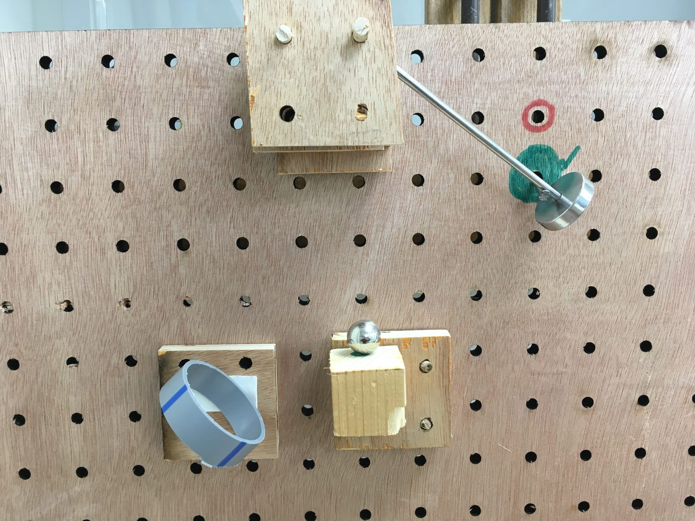
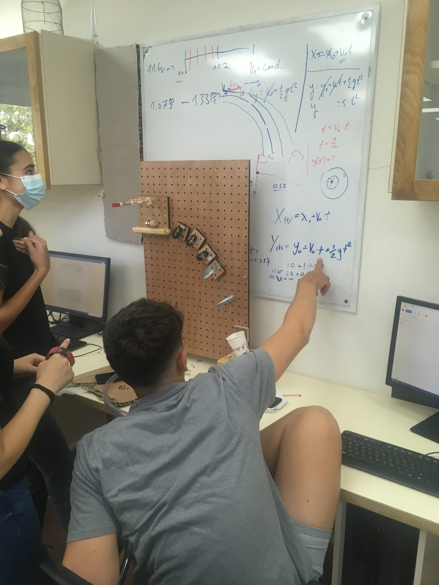
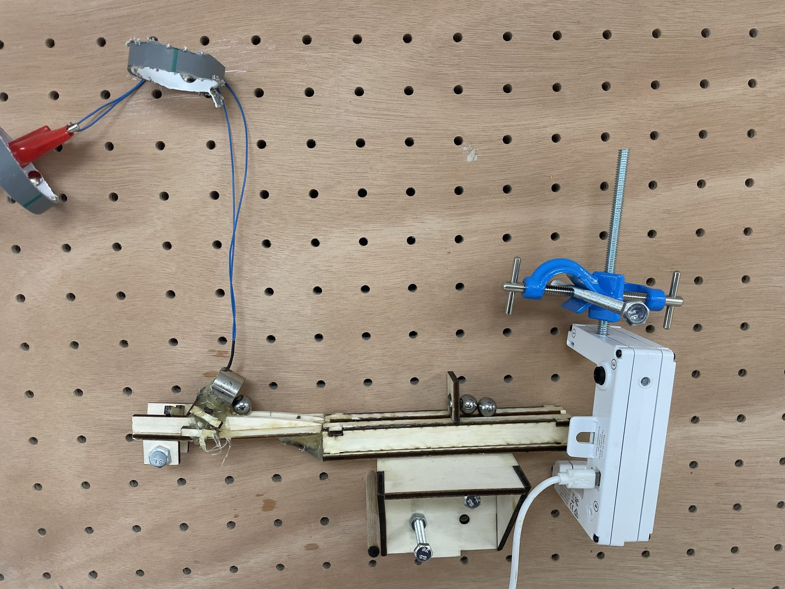
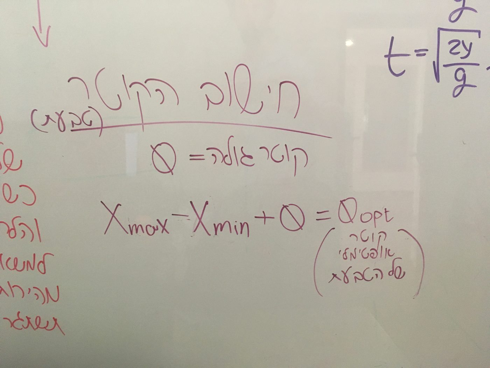
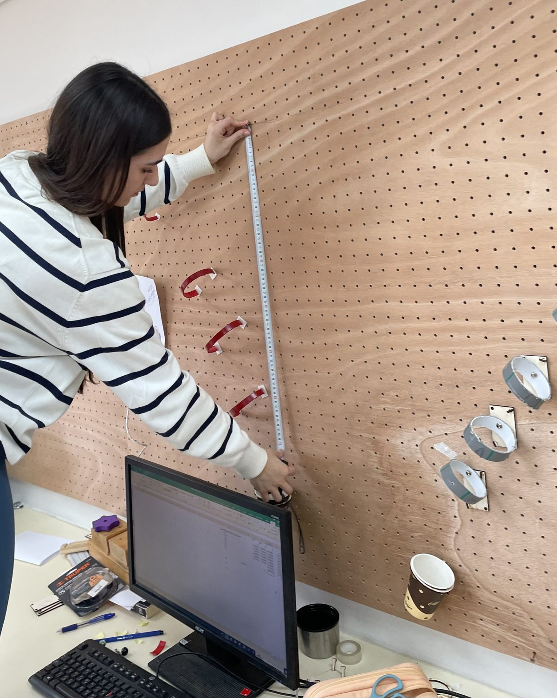
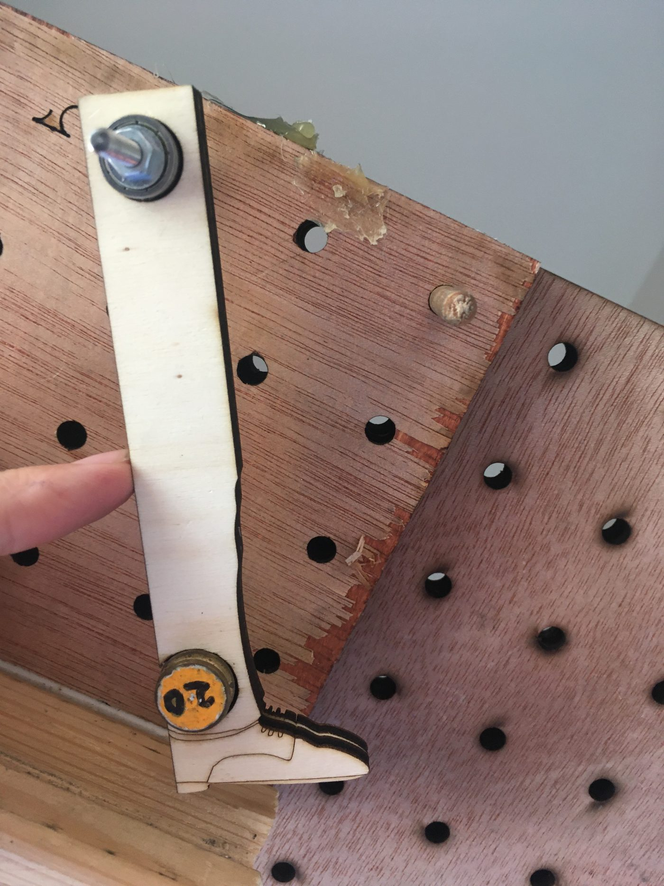
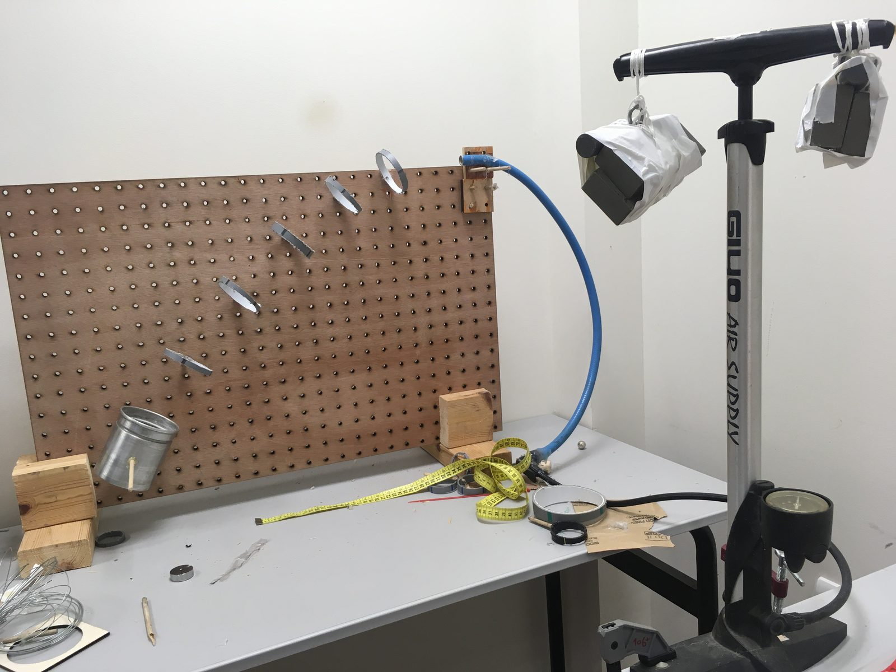
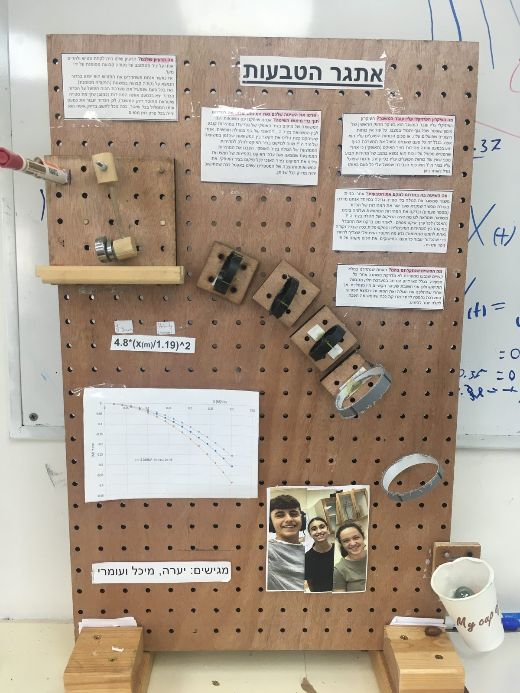

The Marble Challengeビー玉チャレンジ
Transitioning from an open-ended, playful phase to deeper engagement with physics concepts.開かれた遊びの段階から、物理概念へのより深い関与へ。
The students were presented with a challenge and had complete latitude to decide how to meet it: to design and construct a launcher that would launch a marble — in a reproducible way — through a series of rings that they had to place vertically on a wall, and into a small cup. The ring diameters had to be as small as possible, and evenly spaced along the marble's trajectory from the launcher to the cup.
生徒たちには課題が与えられ、それをどう達成するかは完全に自由に委ねられました。ビー玉を——再現性のある形で——壁に垂直に取り付けた一連の輪(リング)にくぐらせ、小さなカップに入れる発射装置を設計・製作することが課題です。輪の直径はできるだけ小さくし、発射装置からカップまでのビー玉の軌道に沿って等間隔に配置しなければなりませんでした。
Each group received a marble, several PVC pipes from which they could cut the rings, a pegboard for the stable attachment of the rings, and a small cup. Students were encouraged to express their creativity in designing the launcher's appearance, mechanism and structure; to build it from scratch, test its performance, present their final artefact to the class, and explain their reasoning. Their launchers exhibited a wide variety of mechanisms, reflecting the open-ended and creative nature of the challenge.
各グループには、ビー玉1個、輪を切り出すための様々な径の塩ビパイプ数本、輪を安定して取り付けるためのペグボード、そして小さなカップが渡されました。発射装置の外観・機構・構造の設計では創造性を発揮すること、ゼロから製作して性能を試すこと、完成した作品をクラスで発表し、その根拠を説明することが求められました。生徒たちの発射装置は実に多様な機構を示し、この課題の開かれた創造的な性格を反映していました。
Over the activity, the students progressed from initial brainstorming and playful prototyping and tinkering to a gradual refinement of their designs through model-based reasoning. They derived an expression for the marble's trajectory, y = (g / 2v02)·x2, and used it to calculate where to place the rings.
活動を通じて、生徒たちは最初のブレインストーミングと遊び心のある試作・試行錯誤から、モデルに基づく推論による設計の段階的な洗練へと進みました。ビー玉の軌道を表す式 y = (g / 2v02)·x2 を導き、それを用いて輪を配置する位置を計算しました。







Full study:論文全文: Peer & Kapon (2025), Physics Education, 60(6)